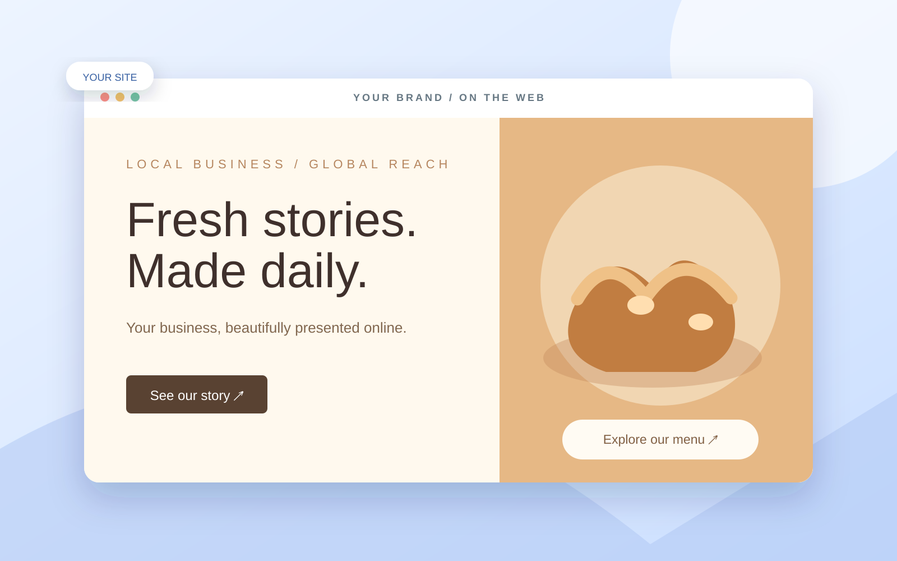
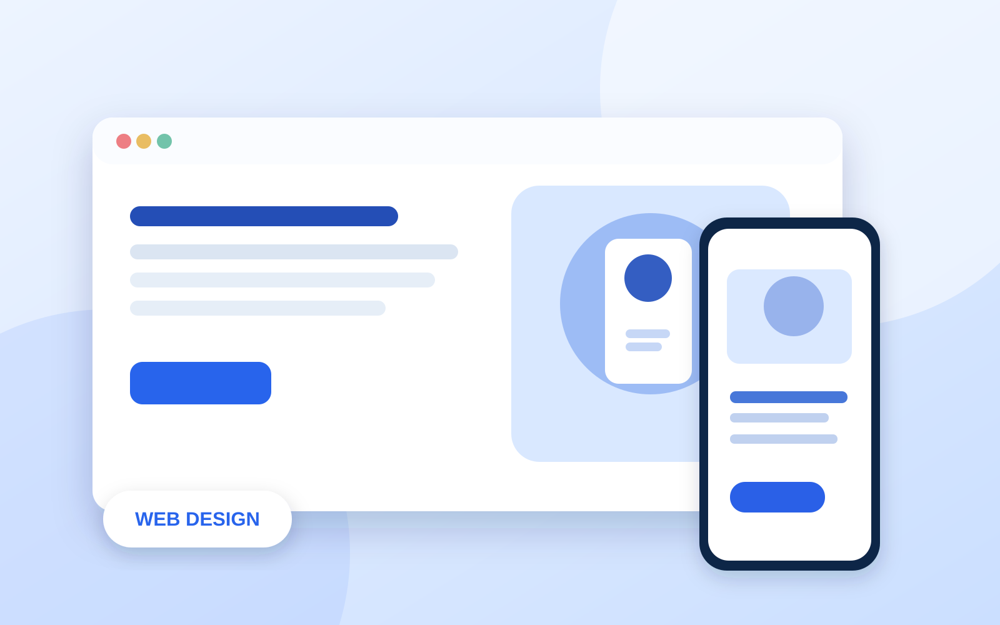
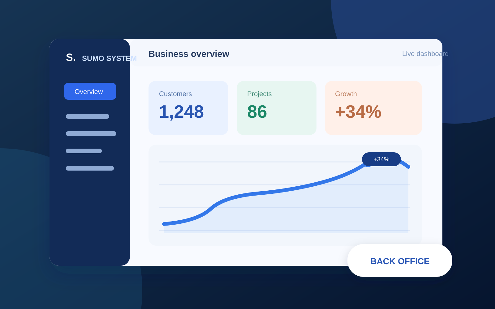
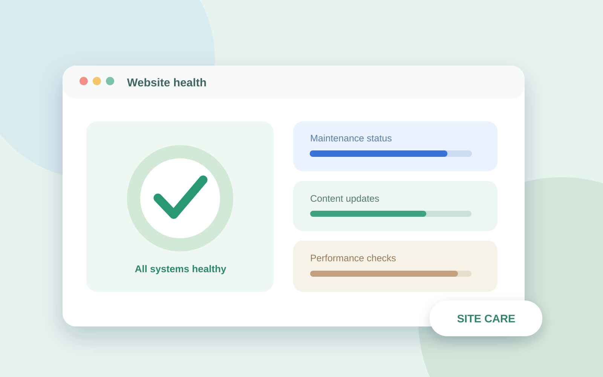

01สร้างการรับรู้


ให้คนรู้จักผ่านโพสต์
Facebook, Instagram และ TikTok ช่วยสร้างความสนใจ แต่ข้อมูลธุรกิจอาจกระจายอยู่ในหลายโพสต์
รับออกแบบและสร้างเว็บไซต์สำหรับคลินิกและธุรกิจ ให้ภาพลักษณ์น่าเชื่อถือ ใช้งานง่ายบนทุกหน้าจอ มีข้อมูลครบ และพร้อมต่อยอดเป็นระบบจัดการงานของคุณ

เพจช่วยให้ลูกค้าเริ่มรู้จักแบรนด์ ส่วนเว็บไซต์ทำให้ข้อมูลบริการ ทีมงาน และที่ตั้งของคุณเป็นแหล่งข้อมูลที่ Google และ AI Search มีโอกาสค้นพบและนำไปแนะนำต่อ เมื่อมีคนถามหาธุรกิจที่เกี่ยวข้อง
Facebook, Instagram และ TikTok ช่วยสร้างความสนใจ แต่ข้อมูลธุรกิจอาจกระจายอยู่ในหลายโพสต์

รวมข้อมูลที่ลูกค้าต้องการไว้ในที่เดียว พร้อมจัดโครงสร้างให้ Google และ AI Search เข้าถึงได้
เมื่อเนื้อหาตรงกับสิ่งที่ค้นหา Google อาจแสดงเว็บไซต์ และ AI Search อาจใช้เป็นแหล่งอ้างอิง
เว็บไซต์ไม่ต้องมาแทนโซเชียล แต่เป็นอีกช่องทางที่ช่วยให้คนที่กำลังค้นหาบริการ พบข้อมูลธุรกิจของคุณได้ง่ายขึ้น
ดีไซน์หลากหลายสไตล์ ที่ปรับให้เข้ากับภาพลักษณ์และวิธีทำงานของธุรกิจ
 01 / BEAUTY & CLINICเว็บไซต์คลินิกดูดีอย่างมีเอกลักษณ์ ↗
01 / BEAUTY & CLINICเว็บไซต์คลินิกดูดีอย่างมีเอกลักษณ์ ↗
 02 / BUSINESS & STUDIOเว็บไซต์ธุรกิจบริการสะท้อนสไตล์ของแบรนด์ ↗
02 / BUSINESS & STUDIOเว็บไซต์ธุรกิจบริการสะท้อนสไตล์ของแบรนด์ ↗
 03 / WELLNESS & LIFESTYLEเว็บไซต์แบรนด์เล่าเรื่องผ่านภาพและสีสัน ↗
03 / WELLNESS & LIFESTYLEเว็บไซต์แบรนด์เล่าเรื่องผ่านภาพและสีสัน ↗
 04 / BEAUTY & PRODUCTเว็บไซต์แบรนด์สินค้าภาพนางแบบและสินค้าสวยเด่น ↗
04 / BEAUTY & PRODUCTเว็บไซต์แบรนด์สินค้าภาพนางแบบและสินค้าสวยเด่น ↗
สลับดูรูปแบบการจัดหน้าและเปิดหน้าเต็มได้ทันที
นำเสนอบริการคลินิกอย่างเป็นระบบ พร้อมช่องทางให้ลูกค้าติดต่อได้สะดวก
ไม่ใช่แค่หน้าตาสวย แต่ต้องช่วยให้คนเข้าใจธุรกิจของคุณ และรู้ว่าจะติดต่อคุณอย่างไร

ออกแบบสี ตัวอักษร และการจัดวางให้เหมาะกับแบรนด์ ไม่ใช้หน้าตาเดียวกันทุกธุรกิจ

จัดลำดับเนื้อหาให้อ่านง่ายบนมือถือ แท็บเล็ต และหน้าจอคอมพิวเตอร์

เริ่มจากเว็บไซต์แนะนำธุรกิจ แล้วค่อยเพิ่มระบบลูกค้าและระบบจัดการตามความต้องการ
ให้ภาพ ผลงาน และเรื่องราวของธุรกิจเป็นสิ่งที่ลูกค้าเห็นตั้งแต่ครั้งแรก
คุยเรื่องเว็บไซต์ของคุณ ↗ต่อยอดจากระบบคลินิกของเรา โดยเลือกฟังก์ชันและปรับตามวิธีทำงานของธุรกิจคุณ
แจ้งขอบเขตและราคาก่อนเริ่มงาน



เลือกเฉพาะบริการที่ธุรกิจต้องการ พร้อมเสนอราคาและขอบเขตงานให้ชัดเจนก่อนเริ่ม
คุยความต้องการ → รวบรวมรูปและข้อมูล → เสนอแบบและสร้างเว็บ → ตรวจงานร่วมกัน → เปิดใช้และส่งมอบ ก่อนเริ่มจะตกลงระยะเวลา จำนวนรอบแก้ไข และค่าใช้จ่ายให้ชัดเจนค่ะ
เว็บไซต์ช่วยรวบรวมข้อมูลสำคัญให้ลูกค้าดูได้เป็นสัดส่วน และใช้เป็นลิงก์กลางจากเพจ โฆษณา หรือช่องทางอื่นได้ โดยยังใช้งาน Facebook ควบคู่กันตามปกติค่ะ
เราจัดข้อมูลบริการ ที่ตั้ง และเรื่องที่ลูกค้าสนใจให้อ่านง่ายและระบบค้นหาเข้าถึงได้ เพื่อเพิ่มโอกาสให้เว็บไซต์ปรากฏในผลค้นหาที่เกี่ยวข้อง หรือเป็นแหล่งข้อมูลประกอบคำตอบจาก AI Search ค่ะ
รับเว็บไซต์สำหรับคลินิก ธุรกิจบริการ และแบรนด์ทั่วไป โดยปรับโครงสร้างและเนื้อหาให้ตรงกับธุรกิจ ส่วนระบบหลังบ้านจะประเมินความเหมาะสมตามงานของแต่ละธุรกิจค่ะ
เตรียมชื่อธุรกิจ โลโก้ รูปภาพ ข้อมูลบริการ ที่ตั้ง และช่องทางติดต่อ หากยังมีเนื้อหาไม่ครบ เราคุยแนวทางจัดข้อมูลร่วมกันได้ ระยะเวลาจะแจ้งหลังสรุปจำนวนหน้าและฟังก์ชันค่ะ
ได้ค่ะ เราวางเว็บไซต์เป็นจุดเริ่มต้น และคุยการต่อยอดระบบตามความต้องการภายหลัง โดยประเมินงานและค่าใช้จ่ายเพิ่มเติมก่อนเริ่มค่ะ
สิทธิ์ในงาน การถือครองโดเมน การส่งมอบไฟล์ และค่าใช้จ่ายต่อเนื่องจะระบุในข้อตกลงก่อนเริ่มงาน เพื่อให้คุณทราบว่าได้รับอะไรและมีค่าบริการส่วนใดบ้างค่ะ
ทุกธุรกิจมีโจทย์ไม่เหมือนกัน เล่าเป้าหมายของคุณ แล้วเริ่มต้นวางเว็บไซต์ที่เหมาะกับงบและการทำงานได้เลย